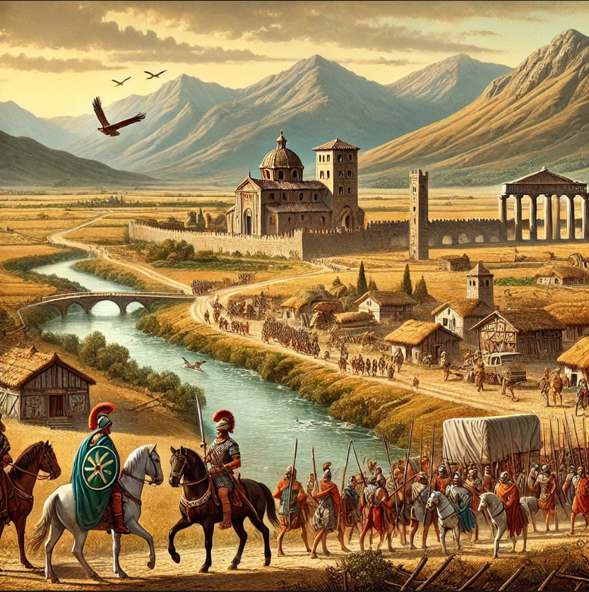
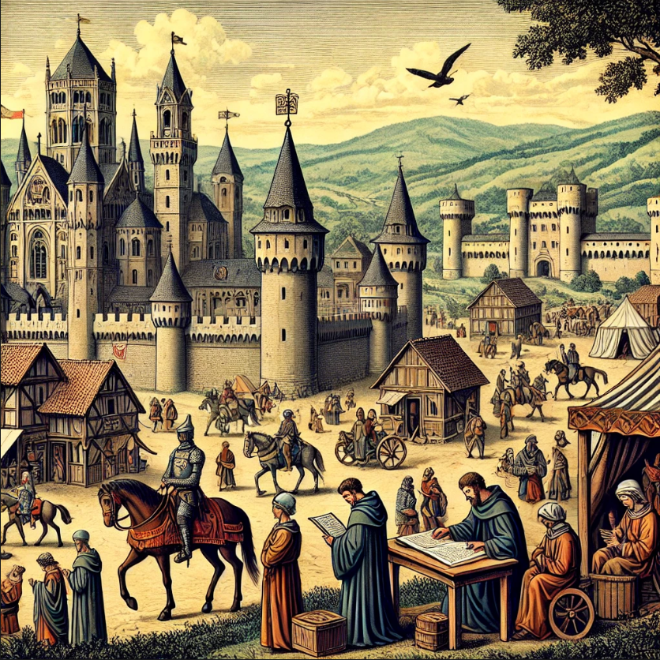
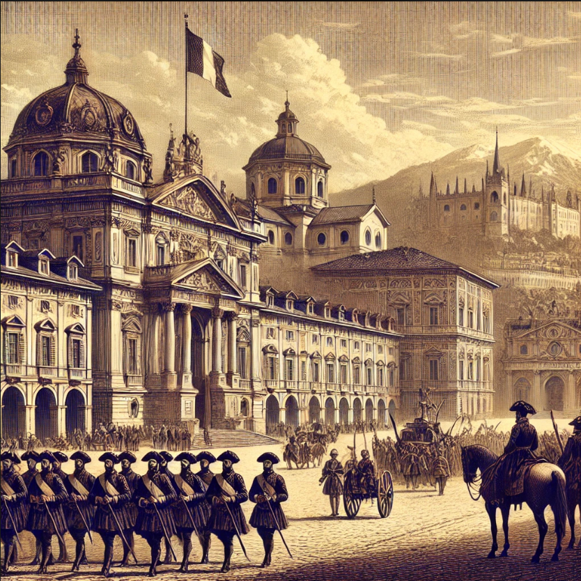
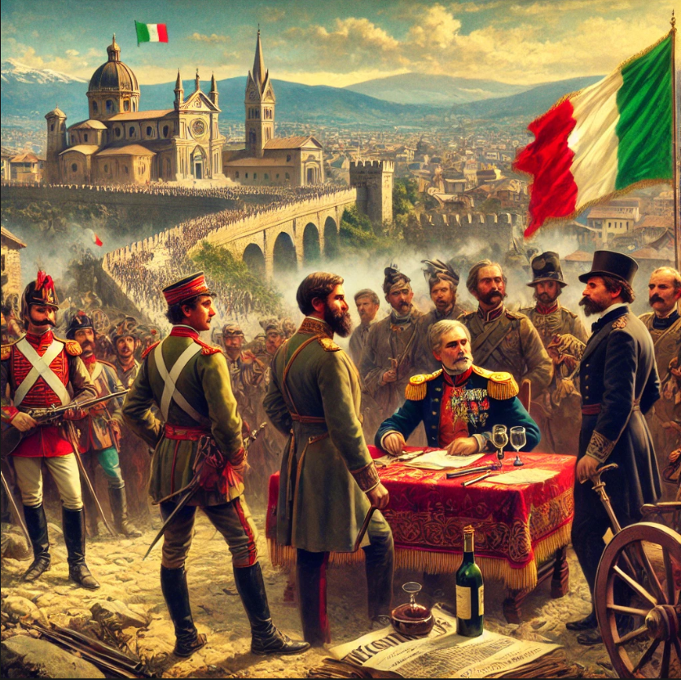
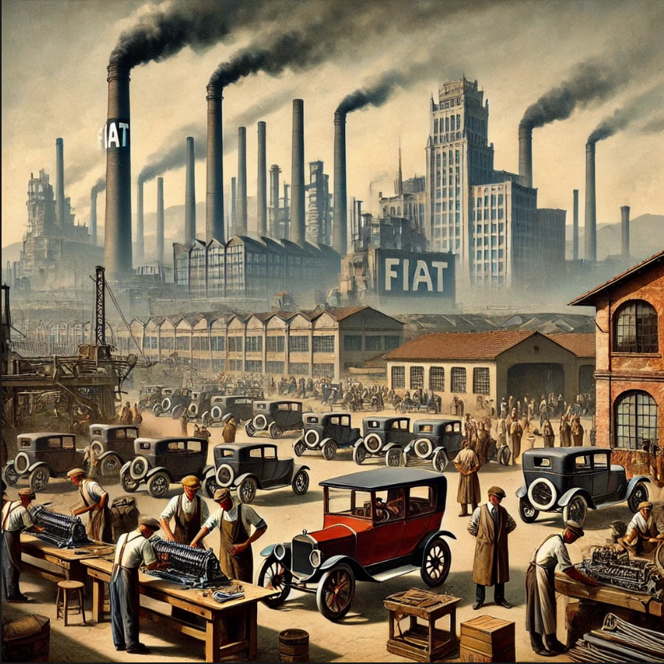

L'Histoire du Piémont : Un Passé Riche et Fascinant
Des Origines Anciennes
Le Piémont, dont le nom signifie « au pied des montagnes », a une histoire riche qui remonte à l’Antiquité. Peuplé à l’origine par des tribus celto-ligures, il fut intégré à l’Empire romain au Ier siècle avant J.-C. Turin, aujourd’hui capitale de la région, fut fondée sous le nom de Augusta Taurinorum. La région prospéra sous l’influence romaine grâce à son agriculture et au développement des routes commerciales reliant l’Italie à la Gaule.
Le Moyen Âge et l’essor des États Féodaux
À la chute de l’Empire romain, le Piémont passa sous domination ostrogothique, puis lombarde et carolingienne. Au cours du Moyen Âge, de nombreux petits fiefs et seigneuries virent le jour, tandis que les monastères devinrent des centres culturels et économiques importants. Au XIe siècle, la maison de Savoie, originaire de la région alpine, commença à étendre son influence sur le Piémont. En 1416, Amédée VIII prit le titre de duc de Savoie, marquant le début de la domination savoyarde sur la région.
La Maison de Savoie et l’Unification Italienne
Du XVIe au XVIIIe siècle, le Piémont fut au cœur des rivalités européennes. Turin devint la capitale du duché de Savoie en 1563, et sous le règne de Victor-Amédée II, le duché acquit une puissance croissante. En 1713, grâce au traité d’Utrecht, il obtient le titre de royaume de Sardaigne, consolidant ainsi son influence en Italie. Au XIXe siècle, le Piémont joua un rôle clé dans l’unification de l’Italie (Il Risorgimento). Sous le roi Victor-Emmanuel II et avec le soutien du Premier ministre Cavour, le royaume de Sardaigne mena des guerres contre l’Autriche et favorisa l’unification italienne. En 1861, Victor-Emmanuel II devint le premier roi d’Italie, et Turin fut la première capitale du pays avant que le pouvoir ne soit transféré à Florence puis à Rome.
Le XXe Siècle et l’Ère Industrielle
Durant la Première et la Seconde Guerre mondiale, le Piémont fut un important centre stratégique. Turin, en particulier, devint un haut lieu de l’industrie avec la montée en puissance de Fiat, fondée en 1899. L’industrialisation attira de nombreux travailleurs du sud de l’Italie, transformant profondément la société piémontaise. Pendant la Seconde Guerre mondiale, la région fut un bastion de la Résistance italienne contre le régime fasciste de Mussolini et l’occupation nazie. Après la guerre, le Piémont participa activement au renouveau économique de l’Italie, devenant un pôle industriel et technologique majeur.
Le Piémont Aujourd’hui : Entre Tradition et Modernité
Aujourd’hui, le Piémont est une région dynamique qui allie son riche passé historique à une modernité prospère. Connue pour son patrimoine culturel, sa gastronomie raffinée et ses paysages spectaculaires, la région continue de jouer un rôle majeur en Italie, tant sur le plan économique que touristique. Avec ses villes historiques, ses vignobles classés au patrimoine mondial de l’UNESCO et ses traditions préservées, le Piémont reste un territoire unique, témoin d’une histoire fascinante qui continue de se réinventer.
